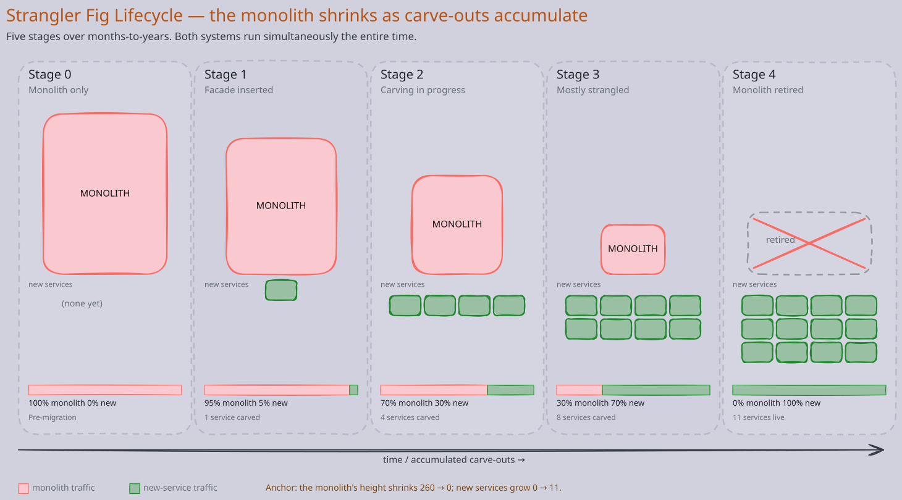
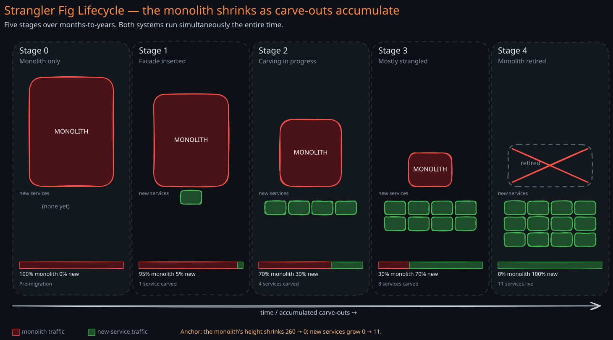
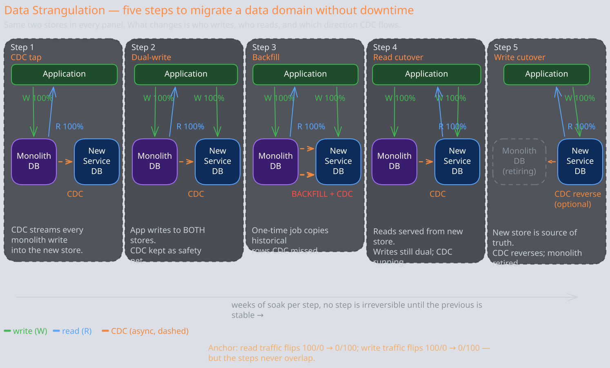
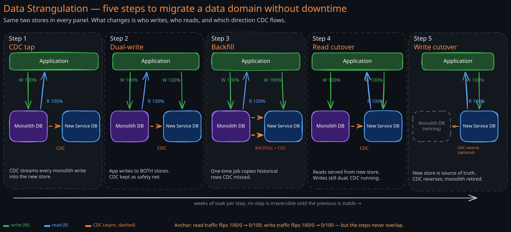

The Story
Martin Fowler named the strangler fig pattern after a tree he watched in Queensland: a fig seed lands in another tree’s canopy, sends a root straight down to the soil, then thickens that root year after year until it forms a complete trunk around the host. The original tree dies hollow inside a fully formed strangler. Fowler used the image because every successful monolith decomposition he had seen looked the same — the new system grew around the old one, took over capabilities one at a time, and only after years was the original safe to remove. The big-bang rewrites he watched fail did not fail because the new design was wrong. They failed because the business never stopped moving during the eighteen-to-thirty-six months the rewrite was in flight, and the rewritten system always landed for the company that started the project, not the one that finished it.
Every team that inherits a monolith eventually asks the same question: do we rewrite it, or do we decompose it? The answer is almost always neither in the way the team first imagines. The rewrite plan dies for business reasons. The decomposition plan dies for technical reasons. What survives is a pattern that treats the migration as a years-long coexistence — the strangler fig.
Related Topics: 07-Microservices, 02-Change-Data-Capture, 02-API-Gateway, 08-Service-Mesh, 03-Fan-Out-Strategies, 10-Schema-Migration
1. The Fundamental Problem
A working monolith embodies years of business logic, edge-case handling, and integrations that exist only because real customers needed them. Most of that logic is undocumented. Some of it is wrong but load-bearing — downstream systems depend on the wrong behavior. A clean rewrite that ignores this accumulated mass tends to ship a system that is technically correct and commercially unusable.
The naive response is the big-bang rewrite: build the replacement in parallel, feature-freeze the monolith, cut over on a Saturday night. Three things kill this plan, in this order:
- Feature freezes are politically impossible. The business will not stop shipping for two years. The moment leadership sees a customer-impacting gap, the freeze breaks and the rewrite team is asked to backport features mid-build.
- Behavior parity is impossible to specify upfront. Hidden coupling — a downstream batch job that depends on a specific NULL handling, a partner integration that relies on a quirky retry header — only surfaces under production traffic.
- The cutover risk is unbounded. A single weekend rollback decision affects the entire business. There is no incremental fallback because no production traffic ever flowed through the new system.
The strangler pattern responds with a different bet: instead of building a parallel system and switching once, coexist the two systems, route traffic gradually, and let production itself drive what gets carved out next.
2. The Strangler Pattern
1. The Core Idea
Place a facade between clients and the monolith. Initially the facade is a transparent pass-through — every request goes to the monolith. Carve one capability at a time into a new service. Reconfigure the facade to route that capability’s traffic to the new service. The monolith never knows. Clients never know. Over many such carve-outs, the monolith shrinks until it can be retired.
Three properties make this work:
- Coexistence by default. Both systems run in production simultaneously for the entire migration. There is no flip-the-switch moment.
- Reversibility per slice. A single capability can be rolled back to the monolith in seconds by reconfiguring the facade. The blast radius of each step is bounded.
- Continuous business value. The business continues to ship features — some land in the monolith, some in the new services. The migration does not block product roadmap.
2. Why the Facade Is the Linchpin
The facade is the only piece of new infrastructure that must exist before any carve-out begins. Without it, every client knows both the monolith URL and the new service URL, and every routing decision is duplicated across clients. With it, the routing decision lives in exactly one place and clients are insulated from the migration entirely.
The facade is usually an L7 reverse proxy (API gateway, Envoy, Nginx) or a request-router service. It owns three responsibilities:
- Terminate the inbound contract
- Decide where each request goes
- Forward to the chosen backend. Authentication, rate limiting, and observability commonly live here too — the facade becomes the natural seam for cross-cutting concerns the monolith never had.
3. Anatomy of a Carve-Out
A single capability is carved out in roughly six steps. The same template runs again and again — the discipline of the pattern is the repetition.
- Identify the seam. Pick one capability that is loosely coupled in the monolith and has a reasonably clean external contract. Bounded contexts from domain-driven design are the usual guide. Avoid capabilities tangled across many tables or used inside many transactions.
- Build the replacement service. Implement the capability in its own service, with its own datastore. Do not call back into the monolith for shared logic — if you must, treat that as technical debt to retire next.
- Backfill data. If the new service owns data the monolith currently holds, build a one-time backfill plus a continuous sync (typically CDC) so the new datastore mirrors the monolith for the duration of coexistence.
- Shadow read. Route a copy of production traffic to the new service while still returning the monolith’s response. Compare outputs offline. Discrepancies surface hidden coupling.
- Canary the writes. Route a small percentage of writes to the new service. Watch error rates, latency, and downstream impact. Expand gradually.
- Retire the old code. Once 100% of traffic flows through the new service and the data has been migrated, delete the capability from the monolith. This step is the one teams skip. Dead code in the monolith is a maintenance tax forever; deleting it is what actually shrinks the host.


The diagram makes the timeline visible: the monolith does not retire because the new services exist, it retires because the carve-outs accumulated. A team that ships two carve-outs a year never finishes; a team that ships one every sprint finishes in eighteen months.
4. Routing Mechanisms
The facade is the obvious place to make the routing decision, but in practice teams use one of four mechanisms depending on where the seam lives in the stack.
- Edge reverse proxy. The facade itself routes by URL path, header, or tenant. Cleanest separation; no monolith code change. Works for capabilities that already have a distinct endpoint.
- Feature flag inside the monolith. A flag check inside monolith code dispatches to either the old in-process logic or an outbound call to the new service. Used when the seam is below the URL boundary — e.g., a method called from many endpoints. The monolith becomes a temporary router.
- Branch by abstraction. Wrap the in-monolith implementation behind an interface, ship a second implementation that calls the new service, and toggle between them via configuration. The pattern is internal to the monolith but eliminates duplicate code paths in clients. Useful when feature-flag dispatch would litter the codebase.
- Parallel-run with diff. Route every request to both the monolith and the new service, return the monolith’s response, and log discrepancies. Identical to shadow-read but applied symmetrically as a long-running correctness gate, not a short discovery step.
Each mechanism trades off control granularity, monolith intrusiveness, and the risk surface of the carve-out. Most large migrations end up using all four at different points.
5. Data Strangulation
Routing requests is the easy half. Data is the hard half — because two services cannot own the same table without one of them lying about consistency.
The canonical playbook is five steps, run sequentially per data domain:
- CDC tap. Connect a CDC stream from the monolith’s database into the new service’s datastore. Every monolith write also lands in the new store. The new service can serve reads immediately.
- Dual-write. New code in the new service writes to its own store and publishes a change back into the monolith’s store (via API or sync). The monolith stops being the only writer.
- Backfill. Historical data the CDC stream missed (rows written before the tap started) is copied across in a one-time job. After backfill, the two stores are in convergence.
- Read cutover. The facade routes reads to the new service. The monolith stops serving reads for this domain. CDC continues to flow as a safety net.
- Write cutover. The new service becomes the source of truth. CDC reverses direction (or stops) so the monolith store becomes a cache or is decommissioned. Dual-writes are turned off.


Each step has a rollback path: if step 4 surfaces a read regression, fall back to monolith reads while the new service is fixed. If step 5 surfaces a write loss, dual-writes can be re-enabled. The discipline is that no step is irreversible until the previous step has been stable in production for weeks.
6. When Strangler Fits and When It Doesn’t
Strangler fits when:
- The monolith is large enough that a rewrite would take more than a quarter
- The business cannot tolerate a feature freeze
- Capabilities have identifiable seams (URL paths, bounded contexts, distinct data domains)
- A facade can be inserted without breaking the existing client contract
- The team can sustain a multi-quarter migration without losing focus
Strangler is overkill when:
- The monolith is small enough that a clean two-week rewrite is genuinely safer than a months-long coexistence
- The replacement is a pure UI rebuild with the same backend — a normal frontend project, not an architecture pattern
- The system is being retired entirely and a successor is being purchased rather than built
Strangler will fail when:
- The team is not given budget to finish carve-outs — partial migrations leave both systems alive forever, doubling maintenance cost
- The monolith’s data model is so deeply entangled that no seam exists — the only honest answer is to spend a quarter refactoring the monolith before starting any carve-out
- Leadership treats it as a checkbox (“migrate to microservices”) rather than a value-driven sequence of carve-outs prioritized by business impact
7. Failure Modes
- The migration that never finishes. Carve-outs slow as the team rotates onto new product work. Five years later both systems are still in production, with new features landing in whichever system the engineer touching it knows better. The combined maintenance cost exceeds the original monolith’s by a large margin. Mitigation: track and publish the percentage of traffic still hitting the monolith; treat retirement as a project milestone with an owner.
- Dual-write divergence. During step 2 of data strangulation, the two stores drift because writes are not atomic across them. One store accepts a write, the other rejects it (validation, network, retry exhaustion), and no one notices for weeks. Mitigation: continuous reconciliation job that re-reads from CDC and diffs; alert on divergence above a threshold.
- Distributed monolith. The new services exist but each one synchronously calls the monolith for shared logic. Latency multiplies; failures cascade; the monolith remains a single point of failure for every “new” service. Mitigation: enforce a rule that carve-outs may publish events to the monolith but may not call into it for inline logic.
- Missing cross-seam observability. A request that used to be a single stack frame in the monolith now hops through facade → monolith → new service → CDC → another new service. When latency regresses, no one can locate the cause because traces stop at the seam. Mitigation: trace propagation through the facade is a precondition for the first carve-out, not an afterthought.
- Facade as bottleneck. Every request flows through the facade. A bug or capacity limit there takes down both systems simultaneously. Mitigation: run the facade as a fleet, not a single instance; treat it as critical-path infrastructure with its own SLO and on-call.
8. Technology-Agnostic Comparison
| Dimension | Big-bang rewrite | Strangler fig | Branch by abstraction | Parallel run |
|---|---|---|---|---|
| Coexistence | None — single cutover | Years — both run in production | Brief — two impls behind one interface | Long — two impls both serve traffic |
| Rollback granularity | All-or-nothing | Per capability, in seconds | Per code path, via config | Per request, automatic |
| Feature freeze required | Yes | No | No | No |
| Routing seam | Day-of-cutover DNS or LB swap | Facade / proxy / gateway | In-code interface | Dispatcher inside each call |
| Data migration | One-time at cutover | Per-domain, CDC + backfill + cutover | Often not applicable (same store) | Often not applicable (same store) |
| Risk profile | Concentrated at one moment | Distributed across many small steps | Distributed across deploys | Distributed; diffs surface continuously |
| Best for | Tiny systems, total platform rebuilds | Large monoliths, business-critical systems | Replacing an in-process algorithm or library | High-stakes correctness migrations (billing, pricing) |
| Worst for | Anything the business depends on | Tiny systems, pure UI rebuilds | Cross-cutting structural changes | Cost-sensitive workloads (double infrastructure) |
The patterns are not mutually exclusive. A large strangler migration commonly uses branch-by-abstraction inside the monolith to enable per-capability dispatch, and parallel-run for the few capabilities where output correctness must be proven before cutover.
Revision Summary
- A big-bang rewrite almost always fails — not because the new design is wrong, but because the business cannot tolerate a multi-quarter feature freeze and the cutover risk is unbounded.
- The strangler fig pattern (Fowler) replaces a monolith by placing a facade in front of it and carving capabilities into new services one at a time. The monolith never knows; clients never know; rollback is per-capability and takes seconds.
- A carve-out runs in six steps: identify seam, build replacement, backfill data, shadow read, canary writes, retire old code. The last step is the one teams skip and it is the one that actually shrinks the monolith.
- The facade is the only mandatory new infrastructure. Routing mechanisms layer onto it: edge proxy, in-monolith feature flag, branch-by-abstraction, parallel-run with diff. Most migrations use all four.
- Data strangulation is the hard half. Five-step playbook per data domain: CDC tap → dual-write → backfill → read cutover → write cutover. No step is irreversible until the previous has been stable for weeks.
- Strangler fits large monoliths the business depends on; it is overkill for small systems and pure UI rebuilds. It fails when the team is never funded to finish — partial migrations leave both systems alive forever.
- Watch for the named failure modes: never-finishing migration, dual-write divergence, distributed monolith, missing cross-seam observability, facade as a bottleneck.
Deep Understanding Questions
-
Carve-out ordering. Your monolith has 40 distinct capabilities. What is the right order to carve them out, and what criteria would you use to prioritize? How does the order interact with team capacity and the risk of partial migration? Ans:
-
Dual-write atomicity. During the dual-write phase, a request writes to the new service’s store successfully but the sync to the monolith’s store fails after three retries. The user-facing operation has already returned success. What recovery options exist, and what consistency guarantee can you honestly advertise during this phase? Ans:
-
Data ownership transfer. A capability has been carved out and now owns its data, but two other monolith capabilities still read from the same tables via direct SQL joins. How does this constrain the data-cutover steps? What patterns let you break the join dependency without carving out all three capabilities at once? Ans:
-
Hidden behavior parity. Shadow reads show that the new service returns the same data 99.7% of the time, but the 0.3% are scattered and not obviously categorizable. What is the systematic way to investigate? At what discrepancy rate is it safe to canary writes? Ans:
-
Facade failure. The facade is a fleet of 20 instances behind a load balancer. A code deploy to the facade introduces a subtle bug that misroutes 5% of requests for one capability to the wrong backend. What does the blast radius look like, and what guardrails should the facade have that the monolith never needed? Ans:
-
Rollback after retirement. Three months after retiring a capability from the monolith, a critical bug in the new service is discovered. The monolith no longer has the code. What does “rollback” mean at this point, and how should the team have hedged against this? Ans:
-
The distributed monolith trap. A team has carved out six services. Each one synchronously calls the monolith for user authentication, configuration, and feature flags. Total request latency has doubled. The team’s instinct is to add caches. Why is this the wrong answer, and what is the right structural fix? Ans:
-
Migration that stalls. Twelve months in, the team has carved out 30% of traffic and a new VP rotates onto the area. The VP cancels further migration work to focus on revenue features. Both systems remain in production indefinitely. What were the structural choices early in the migration that could have prevented this outcome? Ans:
-
CDC during cutover. During the read-cutover step, the CDC stream from the monolith to the new service lags by 30 seconds during a traffic spike. A user updates their profile in the monolith via a residual legacy endpoint and immediately reads it via the new service, getting stale data. How should the system handle this read-after-write window? Ans:
-
Multi-tenant carve-out. The monolith is multi-tenant. The team wants to carve out a capability for one large enterprise customer first to limit blast radius, then expand. How does this change the facade routing logic, and what new failure modes appear when the same capability serves both legacy and new code paths simultaneously? Ans: